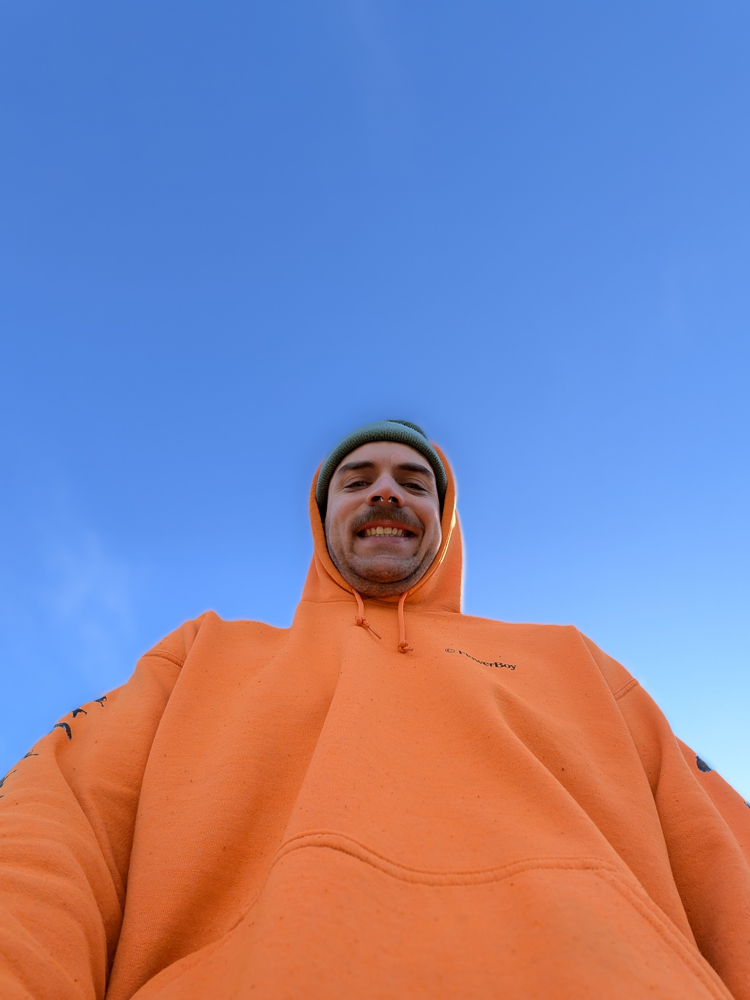

Hi, I'm Michel Delaloye
Welcome to my digital space. Explore my latest work below—where light, video, and digital media intersect—and get an exclusive look behind the scenes.
Now feel free to explore...
My Projects


Atmospheric Dimensions
An exploration of structural light, shadow, and projection spaces mapping architectural thresholds within theatrical environments.
View Project →


Theatrical Illuminations
Designing lightscapes that bring narratives to life, blending intensity, color, and precise timing on stage.
View Project →About Me
I was born in Lucerne, right in the beautiful heart of Switzerland. After completing my apprenticeship as an electrician, I carried out my civil service across a diverse range of organizations. My assignments took me from workshops for people with disabilities and maintenance in a retirement home, all the way to the highlands of Ethiopia. Following my service, I decided to study medical engineering. During this time, I also started working as a projectionist at a local cinema. This role didn’t just fuel my passion for film; it made me realize that my true future lay in technical work that creates experiences for others to enjoy. Recognizing this, I chose to leave my studies after the third year to pursue cinema operations full-time. As I spent more time at the cinema, I became deeply connected to the local cultural scene, which eventually led me to the theater. With my electrical background, the lighting department felt like a perfect fit. I was instantly captivated by the theatrical world and all its moving parts. I quickly learned to navigate this environment and grew eager to expand my skillset. Today, I dive deep into programming, running live shows, and creating lighting designs.
